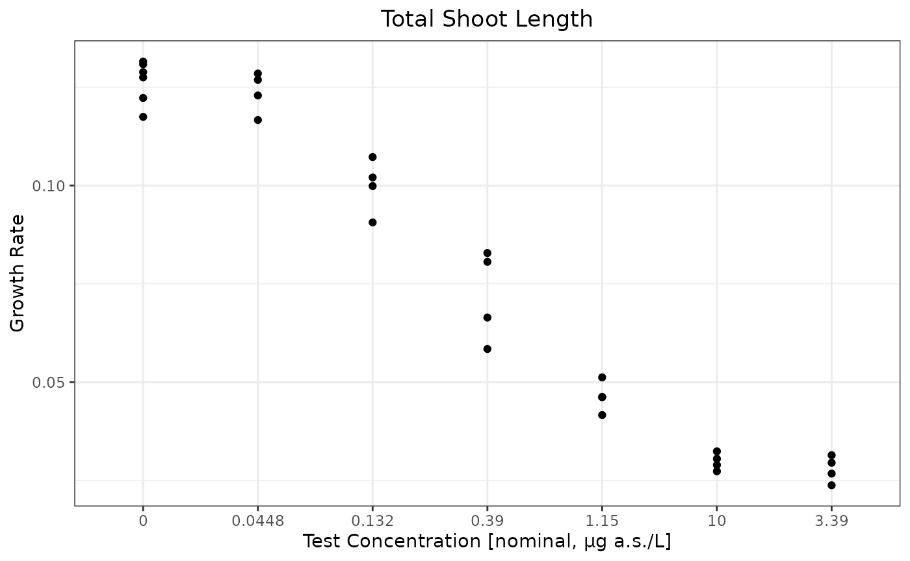
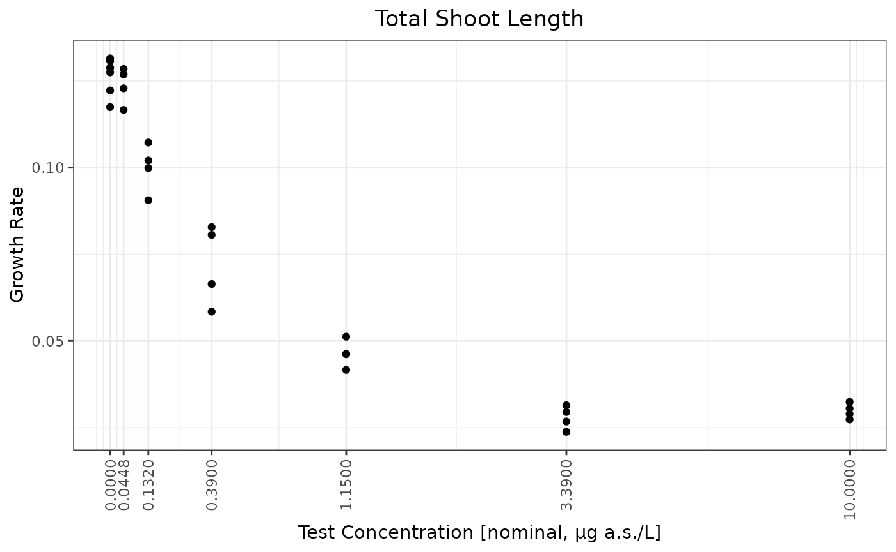
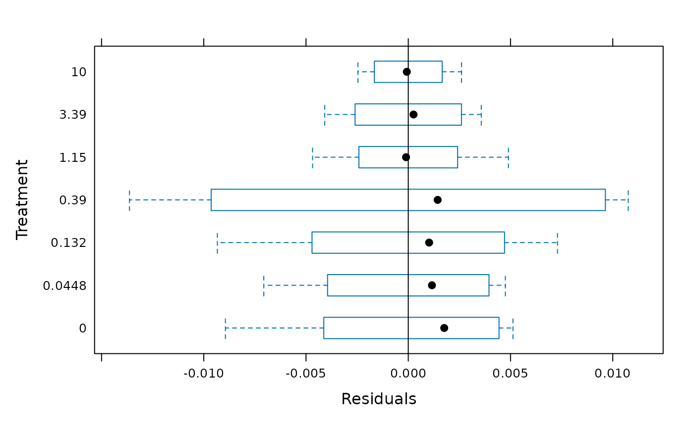

NOEC Calculation for Continuous Data
Sarah Baumert, Zhenglei Gao
December 4, 2024
Source:vignettes/articles/NOEC_Methods.Rmd
NOEC_Methods.RmdNOEC in General
The NOEC (No Observed Effect Concentration) is a critical value in ecotoxicology, representing the highest concentration of a substance that does not produce a statistically significant effect on the test organisms compared to a control group. The concept has various names, including NOER(No Observed Effect Rate), NOEDD(No Observed Effect Daily Dose), NOAEL(No Observed Adverse Effect Level), and so on. It is an important metric for determining safe exposure levels for chemicals and assessing their potential risks to human health and the environment.
It is relatively straightforward to calulate and intepret NOEC, and it is widely used and accepted in the regulatory world. However, it is also criticized for its limitations:
- It focuses only on the single concentration without statistically significant adverse effects that was tested in the study, potentially overlooking the information in the complete dose-response study.
- The observed responses at the NOEC vary between studies, making it harder to compare studies as ECx values.
- NOEC approach does not take the test concentrations as continuous variable, therefore not allow the estimation/prediction of response at any test concentrations.
- It is heavily impacted by the sample size and test concentration selections. Poor experimental design may yield high NOEC due to decreased statistical sensitivity, which is not desired in a regulatory context.
In this article, we focus on NOEC methods for continuous data, which can also be applied to count data. This can be achieved either by simply treating count data as continuous or by transforming the data to stabilize the variance. For quantal data, please go to Quantal Data for more information.
Continuous data are numerical data that can take any value within a range (e.g., weight, height), while count data are discrete and represent the number of occurrences of an event (e.g., number of species observed in a pitfall). It is hard to determine a distribution of count data in real world. Poisson, negative-binomial are common distributions used to model count data. The Poisson distribution is often used when the mean and variance are equal, while the negative-binomial distribution is used when the data exhibit overdispersion (variance greater than the mean). Many count datasets have more zeros than expected under standard count models, leading to zero-inflated models or hurdle models that account for this excess. Small sample sizes can make it difficult to determine the underlying distribution of the data and can affect the robustness of statistical methods. There are also other challenges like non-constant variance that does not follow a mean variance relationship, issues caused by censoring or truncation, etc. Therefore, transformations, such as logarithmic or square root transformations, are often used to stabilize variance and meet the assumptions of standard statistical tests for continuous data when dealing with non-normal data distributions.
Methods for deriving NOEC
- Dunnett’s Test: used to compare multiple treatment groups against a control group while controlling for Type I error,
- Step-Down Williams’ test: used to identify a significant trend.
- Non-parametric tests: like Dunn’s test after Kruskal-Wallis test or step-down Jonckheere-Terpstra trend test.
Williams’ test and Dunnett’s test are both commonly used parametric methods used for NOEC calculations. Williams’ test assumes that the data is monotonic, meaning that the response variable consistently increases or decreases across the levels of the independent variable. This assumption is crucial for the validity of the test results. In contrast, Dunnett’s test does not require the data to be monotonic. This flexibility allows it to be applied in a wider range of situations. When the data does meet the monotonicity assumption, Williams’ test tends to have a bit greater statistical power compared to Dunnett’s test. This means that Williams’ test is more likely to detect a true effect when one exists, leading to fewer Type II errors (failing to reject a false null hypothesis). However, in situations where the data is not monotonic, Dunnett’s test is more appropriate. While it may have slightly less power when the data is monotonic, its robustness in handling non-monotonic data makes it a valuable tool in statistical analysis.
Dealing with inhomogenous variance
There are several ways to deal with inhomogeneous variances.
- Welch’s ANOVA (an adaptation of ANOVA that dose not assume equal variance) followed by Dunnett’s test with inhomogeneous variances.
- Robust statistical techniques such as sandwich standard error estimations.
- Bootstrapping can be used to estimate confidence intervals for NOEC without relying on normality assumptions.
- Applying data transformations can stablize variances and meet the assumptions of parametric tests. However, this increases the complexity of results interpretation and should be avoided if possible.
Below we use a mock Myriophyllum study to illustrate how the NOECs are derived with different approaches.
data("test_cases_data")
testdata <- test_cases_data%>% filter(`Test organism` == "Myriophyllum" & Design =="NOEC/ECx")
unique(testdata$`Study ID`)
#> [1] "MOCK0065"
testdata$Dose <- as.numeric(gsub(",",".",testdata$Dose))
metainfo <- testdata[1,]
design <- ifelse(metainfo$Design=="Limit","limit test", "full dose response study")
nconc <- length(unique(testdata$Dose))
# endpoints <- unique(testdata$Endpoint)
# obsVar <- unique(testdata$`Measurement Variable`)
endpoints <- unique(testdata[,c("Endpoint","Measurement Variable","Time")])
str_endpoints <- apply(endpoints,1,function(x) paste(x[1], "of",x[2], "at",x[3]))
concunit <- metainfo$Unit
conctype <- metainfo$`Concentration type`The test is a full dose response study for test organism Myriophyllum. There are 7 test concentrations. The interested endpoint is Growth Rate of Total shoot length at 14 d in this mock study data.
Visualize the data
#log1p <- function(x) log(x+1)
ilog1p <- function(x) {
exp(x) - 1
}
theme_set(theme_bw())
theme_update(plot.title =
element_text(hjust = 0.5))
ggplot(testdata,aes(x=as.character(Dose),y=Response))+geom_point() + ylab("Growth Rate") + xlab(paste0("Test Concentration [",conctype,", ",concunit,"]"))+ggtitle("Total Shoot Length")
doses <- unique(testdata$Dose)
ratios <- sapply(2:(length(doses) - 1), function(i) doses[i + 1] / doses[i])
## note that the factor between the doses is around 2.95.
ggplot(testdata,aes(x=Dose,y=Response))+geom_point() + ylab("Growth Rate") + xlab(paste0("Test Concentration [",conctype,", ",concunit,"]"))+ggtitle("Total Shoot Length")+scale_x_continuous(breaks=doses,trans = scales::trans_new("log1p",log1p,ilog1p))+ theme(axis.text.x = element_text(angle = 90, vjust = 0.5, hjust=1))
Basic Summary of the Data
ctr <- testdata %>% filter(Dose == 0)
ctr0 <- mean(ctr$Response)
sres <- testdata %>% group_by(Dose)%>% dplyr::summarize(Mean=mean(Response),SD=sd(Response)) %>% mutate(`% Inhibition` = - ((Mean-ctr0)/ctr0)*100, CV=SD/Mean*100)
sres %>% knitr::kable(.,digits = 3)| Dose | Mean | SD | % Inhibition | CV |
|---|---|---|---|---|
| 0.000 | 0.126 | 0.005 | 0.000 | 4.334 |
| 0.045 | 0.124 | 0.005 | 2.119 | 4.253 |
| 0.132 | 0.100 | 0.007 | 20.929 | 6.953 |
| 0.390 | 0.072 | 0.012 | 42.971 | 16.139 |
| 1.150 | 0.046 | 0.004 | 63.343 | 8.444 |
| 3.390 | 0.028 | 0.003 | 77.942 | 11.957 |
| 10.000 | 0.030 | 0.002 | 76.409 | 7.267 |
testdata <- testdata %>% mutate(Treatment=factor(Dose))
mod0 <- lm(Response~Treatment,data=testdata)Check normality of residuals
shapiro.test(residuals(mod0)) ## not completely normal
#>
#> Shapiro-Wilk normality test
#>
#> data: residuals(mod0)
#> W = 0.98098, p-value = 0.851
opar <- par(no.readonly = TRUE)
qqnorm(residuals(mod0))
qqline(residuals(mod0), col = 2)
#par(mfrow = c(2, 2), oma = c(0, 0, 2, 0))
#plot(mod0,ask=F)Check homogeneity of variance
car::leveneTest(Response~Treatment,data=testdata,center=mean)
#> Levene's Test for Homogeneity of Variance (center = mean)
#> Df F value Pr(>F)
#> group 6 3.6043 0.01148 *
#> 23
#> ---
#> Signif. codes: 0 '***' 0.001 '**' 0.01 '*' 0.05 '.' 0.1 ' ' 1
car::leveneTest(Response~Treatment,data=testdata,center=median)
#> Levene's Test for Homogeneity of Variance (center = median)
#> Df F value Pr(>F)
#> group 6 2.7571 0.03616 *
#> 23
#> ---
#> Signif. codes: 0 '***' 0.001 '**' 0.01 '*' 0.05 '.' 0.1 ' ' 1At \(\alpha=0.01\), homogeneity variance assumption cannot be rejected. At \(\alpha=0.05\), there is enough evidence to reject the homogeneity variance assumption.
Check Monotonicity
monotonicityTest(testdata,Treatment="Treatment",Response="Response")
#> Test t value Pr(>|t|) Significance
#> 1 Linear -12.55 <0.0001 ***
#> 2 Quadratic 1.10 0.2814 .The data shows significant linear trend and can be considered monotonic.
Williams’ trend test
Note that PMCMRplus::williamsTest produces more accurate
results. But both functions gives almost perfect agreement in most
cases.
(will <- PMCMRplus::williamsTest(Response~Treatment,testdata,alternative ="less"))
#>
#> Williams trend test
#>
#> data: Response by Treatment
#> alternative hypothesis: less
#>
#> H0
#> t'-value df t'-crit decision alpha
#> mu1 - ctr >= 0 0.672 23 1.714 accept 0.05
#> mu2 - ctr >= 0 6.635 23 1.784 reject 0.05
#> mu3 - ctr >= 0 13.624 23 1.808 reject 0.05
#> mu4 - ctr >= 0 20.082 23 1.817 reject 0.05
#> mu5 - ctr >= 0 24.468 23 1.825 reject 0.05
#> mu6 - ctr >= 0 24.468 23 1.827 reject 0.05
#> ---
drcHelper::williamsTest_JG(testdata,trt ="Treatment",res ="Response")
#> Treatment Y.Tilde Y0 Se.Diff DF Will TCrit Signif
#> Q6 10 0.02885 0.1264 0.003987 23 24.4700 1.827 *
#> Q5 3.39 0.02885 0.1264 0.003987 23 24.4700 1.825 *
#> Q4 1.15 0.04630 0.1264 0.003987 23 20.0900 1.817 *
#> Q3 0.39 0.07210 0.1264 0.003987 23 13.6200 1.808 *
#> Q2 0.132 0.09990 0.1264 0.003987 23 6.6470 1.785 *
#> 0.0448 0.12370 0.1264 0.003987 23 0.6772 1.714 .Inside the drcHelper package,
getwilliamRes is a function to get accept or reject vector
results.
getwilliamRes(will)
#> [1] "accept" "reject" "reject" "reject" "reject" "reject"Dunnett’s Tests
Dunnett’s test is a multiple comparison test for determining significant differences between the mean values of several test groups and a control with normally distributed errors with homogeneous variance. Dunnett’s test is robust to slight violations of the normality and variance homogeneity assumptions.
There are several packages providing function for the calculation of
the Dunnett’s test. The function DunnettTest from the
library DescTools is calculating correct results for the
“two.sided” direction. The function dunnettTest from the
library PMCMRplus can be used to calculate the test options
“less” (smaller), “greater” and “two.sided”. The results for the
“two.sided” option differ in some cases from the results of
DunnettTest from the library DescTools,
due to multivariate normal calculations. Another commonly used tool is
the glht function with Dunnet type contrast in the
multcomp package.
There are also possibilities to use other packages. For example, emmeans is a package for estimating marginal means and conducting pairwise comparisons.
library(multcomp)
(dun <- summary(glht(aov(Response~Treatment, data=testdata), linfct=mcp(Treatment="Dunnett"),alternative="less")))
#>
#> Simultaneous Tests for General Linear Hypotheses
#>
#> Multiple Comparisons of Means: Dunnett Contrasts
#>
#>
#> Fit: aov(formula = Response ~ Treatment, data = testdata)
#>
#> Linear Hypotheses:
#> Estimate Std. Error t value Pr(<t)
#> 0.0448 - 0 >= 0 -0.002679 0.003987 -0.672 0.648
#> 0.132 - 0 >= 0 -0.026454 0.003987 -6.635 <1e-04 ***
#> 0.39 - 0 >= 0 -0.054314 0.003987 -13.624 <1e-04 ***
#> 1.15 - 0 >= 0 -0.080064 0.003987 -20.082 <1e-04 ***
#> 3.39 - 0 >= 0 -0.098517 0.003987 -24.711 <1e-04 ***
#> 10 - 0 >= 0 -0.096580 0.003987 -24.225 <1e-04 ***
#> ---
#> Signif. codes: 0 '***' 0.001 '**' 0.01 '*' 0.05 '.' 0.1 ' ' 1
#> (Adjusted p values reported -- single-step method)
(dun <- summary(glht(aov(Response~Treatment, data=testdata), linfct=mcp(Treatment="Dunnett"),alternative="two.sided")))
#>
#> Simultaneous Tests for General Linear Hypotheses
#>
#> Multiple Comparisons of Means: Dunnett Contrasts
#>
#>
#> Fit: aov(formula = Response ~ Treatment, data = testdata)
#>
#> Linear Hypotheses:
#> Estimate Std. Error t value Pr(>|t|)
#> 0.0448 - 0 == 0 -0.002679 0.003987 -0.672 0.97
#> 0.132 - 0 == 0 -0.026454 0.003987 -6.635 <1e-04 ***
#> 0.39 - 0 == 0 -0.054314 0.003987 -13.624 <1e-04 ***
#> 1.15 - 0 == 0 -0.080064 0.003987 -20.082 <1e-04 ***
#> 3.39 - 0 == 0 -0.098517 0.003987 -24.711 <1e-04 ***
#> 10 - 0 == 0 -0.096580 0.003987 -24.225 <1e-04 ***
#> ---
#> Signif. codes: 0 '***' 0.001 '**' 0.01 '*' 0.05 '.' 0.1 ' ' 1
#> (Adjusted p values reported -- single-step method)Another approach is to use emmeans package. Note that the p value adjustment method is different and is called “dunnettx”. However the t statistic, df, and SE estimations are all the same.
library(emmeans)
m <- aov(Response~Treatment, data=testdata)
emmeans(m, specs = trt.vs.ctrl ~ Treatment)
#> $emmeans
#> Treatment emmean SE df lower.CL upper.CL
#> 0 0.1264 0.00252 23 0.1212 0.1316
#> 0.0448 0.1237 0.00309 23 0.1173 0.1301
#> 0.132 0.0999 0.00309 23 0.0936 0.1063
#> 0.39 0.0721 0.00309 23 0.0657 0.0785
#> 1.15 0.0463 0.00309 23 0.0399 0.0527
#> 3.39 0.0279 0.00309 23 0.0215 0.0343
#> 10 0.0298 0.00309 23 0.0234 0.0362
#>
#> Confidence level used: 0.95
#>
#> $contrasts
#> contrast estimate SE df t.ratio p.value
#> Treatment0.0448 - Treatment0 -0.00268 0.00399 23 -0.672 0.9198
#> Treatment0.132 - Treatment0 -0.02645 0.00399 23 -6.635 <.0001
#> Treatment0.39 - Treatment0 -0.05431 0.00399 23 -13.624 <.0001
#> Treatment1.15 - Treatment0 -0.08006 0.00399 23 -20.082 <.0001
#> Treatment3.39 - Treatment0 -0.09852 0.00399 23 -24.711 <.0001
#> Treatment10 - Treatment0 -0.09658 0.00399 23 -24.225 <.0001
#>
#> P value adjustment: dunnettx method for 6 testsNOEC is the lowest tested concentration rdoses[2]`.
Nonparametric Tests
Jonckheere-Terpstra test
jonckheere <- PMCMRplus::stepDownTrendTest(Response~Treatment, data=testdata,test = "jonckheereTest",
alternative = "less")
summary(jonckheere)
#>
#> Step down Jonckheere-Terpstra test
#> data: Response by Treatment
#> alternative hypothesis: less
#> P value adjustment method: none
#> H0
#> z value Pr(<z)
#> 0.0448 >= 0 -1.066 0.1432110
#> 0.132 >= 0.0448 >= 0 -2.946 0.0016081 **
#> 0.39 >= 0.132 >= ... >= 0 -4.181 1.4491e-05 ***
#> 1.15 >= 0.39 >= ... >= 0 -5.150 1.3033e-07 ***
#> 3.39 >= 1.15 >= ... >= 0 -5.968 1.2019e-09 ***
#> 10 >= 3.39 >= ... >= 0 -6.290 1.5913e-10 ***
#> ---
#> Signif. codes: 0 '***' 0.001 '**' 0.01 '*' 0.05 '.' 0.1 ' ' 1Dunn’s test
Dunn’s test is not very powerful in general.
m <- lm(Response~Treatment, data=testdata)
dunn <- PMCMRplus::kwManyOneDunnTest(Response~Treatment, data=testdata,alternative = "less")
summary(dunn)
#> z value Pr(<z)
#> 0.0448 - 0 >= 0 -0.367 0.77622945
#> 0.132 - 0 >= 0 -1.378 0.30718909
#> 0.39 - 0 >= 0 -2.082 0.08734203 .
#> 1.15 - 0 >= 0 -2.786 0.01445234 *
#> 3.39 - 0 >= 0 -3.974 0.00021077 ***
#> 10 - 0 >= 0 -3.710 0.00062473 ***Dunnett’s Tests with Inhomogenious Variance
library(nlme)
gls0 <- gls(Response ~ Treatment, data=testdata,weights=varIdent(form= ~1|Treatment))
plot(gls0,Treatment ~ fitted(.))
treat.means <- emmeans(gls0, ~ Treatment)
## no adjustment for p-values
## contrast(treat.means, adjust="none", method="dunnett", ref = 1)
contrast(treat.means, method="dunnett", ref = 1)
#> contrast estimate SE df t.ratio p.value
#> Treatment0.0448 - Treatment0 -0.00268 0.00345 6.66 -0.776 0.8819
#> Treatment0.132 - Treatment0 -0.02645 0.00413 5.43 -6.402 0.0043
#> Treatment0.39 - Treatment0 -0.05431 0.00623 3.89 -8.715 0.0042
#> Treatment1.15 - Treatment0 -0.08006 0.00297 7.96 -26.947 <.0001
#> Treatment3.39 - Treatment0 -0.09852 0.00279 8.01 -35.321 <.0001
#> Treatment10 - Treatment0 -0.09658 0.00248 6.99 -38.867 <.0001
#>
#> Degrees-of-freedom method: satterthwaite
#> P value adjustment: dunnettx method for 6 tests
summary(glht(gls0,mcp(Treatment="Dunnett")))
#>
#> Simultaneous Tests for General Linear Hypotheses
#>
#> Multiple Comparisons of Means: Dunnett Contrasts
#>
#>
#> Fit: gls(model = Response ~ Treatment, data = testdata, weights = varIdent(form = ~1 |
#> Treatment))
#>
#> Linear Hypotheses:
#> Estimate Std. Error z value Pr(>|z|)
#> 0.0448 - 0 == 0 -0.002679 0.003453 -0.776 0.935
#> 0.132 - 0 == 0 -0.026454 0.004132 -6.402 <1e-05 ***
#> 0.39 - 0 == 0 -0.054314 0.006232 -8.715 <1e-05 ***
#> 1.15 - 0 == 0 -0.080064 0.002971 -26.947 <1e-05 ***
#> 3.39 - 0 == 0 -0.098517 0.002789 -35.321 <1e-05 ***
#> 10 - 0 == 0 -0.096580 0.002485 -38.867 <1e-05 ***
#> ---
#> Signif. codes: 0 '***' 0.001 '**' 0.01 '*' 0.05 '.' 0.1 ' ' 1
#> (Adjusted p values reported -- single-step method)
fit <- aov(Response ~ Treatment, data=testdata)
summary(PMCMRplus::welchManyOneTTest(fit, alternative = "two.sided", p.adjust="holm"))
#> t value Pr(>|t|)
#> 0.0448 - 0 == 0 -0.776 0.4640697
#> 0.132 - 0 == 0 -6.402 0.0030079 **
#> 0.39 - 0 == 0 -8.715 0.0030079 **
#> 1.15 - 0 == 0 -26.947 1.9119e-08 ***
#> 3.39 - 0 == 0 -35.321 2.7730e-09 ***
#> 10 - 0 == 0 -38.867 1.0129e-08 ***
summary(glht(gls0,mcp(Treatment="Dunnett")),test = adjusted("holm"))
#>
#> Simultaneous Tests for General Linear Hypotheses
#>
#> Multiple Comparisons of Means: Dunnett Contrasts
#>
#>
#> Fit: gls(model = Response ~ Treatment, data = testdata, weights = varIdent(form = ~1 |
#> Treatment))
#>
#> Linear Hypotheses:
#> Estimate Std. Error z value Pr(>|z|)
#> 0.0448 - 0 == 0 -0.002679 0.003453 -0.776 0.438
#> 0.132 - 0 == 0 -0.026454 0.004132 -6.402 3.07e-10 ***
#> 0.39 - 0 == 0 -0.054314 0.006232 -8.715 < 2e-16 ***
#> 1.15 - 0 == 0 -0.080064 0.002971 -26.947 < 2e-16 ***
#> 3.39 - 0 == 0 -0.098517 0.002789 -35.321 < 2e-16 ***
#> 10 - 0 == 0 -0.096580 0.002485 -38.867 < 2e-16 ***
#> ---
#> Signif. codes: 0 '***' 0.001 '**' 0.01 '*' 0.05 '.' 0.1 ' ' 1
#> (Adjusted p values reported -- holm method)Alternative Approaches
These approaches are not routinely used in the regulatory NOEC calculations. However, they are very useful in certain situations.
Tamhane-Dunnett’s Test
For many-to-one comparisons in an one-factorial layout with normally distributed residuals and unequal variances Tamhane-Dunnett’s test can be used.
set.seed(245)
mn <- c(1, 2, 2^2, 2^3, 2^4)
x <- rep(mn, each=5) + rnorm(25)
g <- factor(rep(1:5, each=5))
fit <- aov(x ~ g - 1)
shapiro.test(residuals(fit))
#>
#> Shapiro-Wilk normality test
#>
#> data: residuals(fit)
#> W = 0.96609, p-value = 0.5484
bartlett.test(x ~ g - 1)
#>
#> Bartlett test of homogeneity of variances
#>
#> data: x by g
#> Bartlett's K-squared = 1.0766, df = 4, p-value = 0.898
anova(fit)
#> Analysis of Variance Table
#>
#> Response: x
#> Df Sum Sq Mean Sq F value Pr(>F)
#> g 5 1761.11 352.22 171.01 1.069e-15 ***
#> Residuals 20 41.19 2.06
#> ---
#> Signif. codes: 0 '***' 0.001 '**' 0.01 '*' 0.05 '.' 0.1 ' ' 1
## works with object of class aov
library(PMCMRplus)
summary(tamhaneDunnettTest(fit, alternative = "greater"))
#> t value Pr(>t)
#> 2 - 1 <= 0 1.399 0.32792374
#> 3 - 1 <= 0 3.368 0.01849964 *
#> 4 - 1 <= 0 7.223 0.00021346 ***
#> 5 - 1 <= 0 15.186 3.5096e-09 ***
## summary(welchManyOneTTest(fit, alternative = "greater", p.adjust="single-step"))
## p.adjust “holm”, “hochberg”, “hommel”, “bonferroni”, “BH”, “BY”, “fdr”, “none”
summary(welchManyOneTTest(fit, alternative = "greater", p.adjust="holm"))
#> t value Pr(>t)
#> 2 - 1 <= 0 1.399 0.10262533
#> 3 - 1 <= 0 3.368 0.01089476 *
#> 4 - 1 <= 0 7.223 0.00013621 ***
#> 5 - 1 <= 0 15.186 7.0276e-07 ***
DescTools::DunnettTest(x~g, alternative = "greater") ## alternative is not taking effect in this case
#>
#> Dunnett's test for comparing several treatments with a control :
#> 95% family-wise confidence level
#>
#> $`1`
#> diff lwr.ci upr.ci pval
#> 2-1 1.201147 -1.2064128 3.608708 0.4992
#> 3-1 3.041632 0.6340717 5.449192 0.0110 *
#> 4-1 7.245476 4.8379162 9.653037 5.1e-08 ***
#> 5-1 15.611204 13.2036439 18.018764 < 2e-16 ***
#>
#> ---
#> Signif. codes: 0 '***' 0.001 '**' 0.01 '*' 0.05 '.' 0.1 ' ' 1
PMCMRplus::dunnettTest(x~g)
#> 1
#> 2 0.511
#> 3 0.012
#> 4 1.2e-07
#> 5 < 2e-16
PMCMRplus::dunnettTest(x~g, alternative = "greater")
#> 1
#> 2 0.2554
#> 3 0.0055
#> 4 1.9e-08
#> 5 < 2e-16